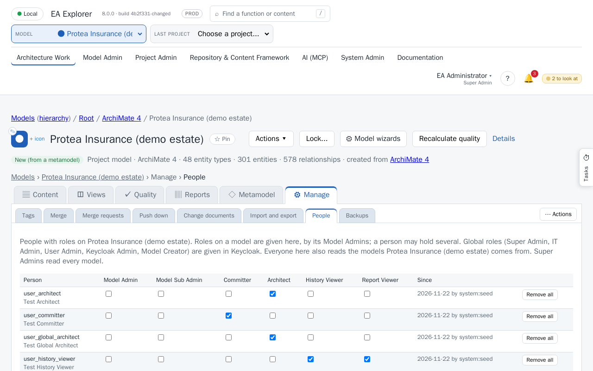

Give people roles on a model
For: Model Admin
Who may read, change, commit and look after one model.

#/metamodel/{m}/peopleWhy do this
Roles on a model decide who may read it, change it, commit changes, and look after it. Giving them per model lets each owner run their own model without asking a System Admin. See Roles and access.
Access in EA Explorer is layered so each owner decides for their own part: System Admins for the installation, Model Admins for models, Project Admins for projects. Most people need only a few roles to do their work.
In TOGAF terms: The Preliminary phase's architecture capability: who does architecture work and with what authority. Sign-in itself is outside the method. See EA Explorer and the TOGAF Standard.
The goal: The right people can do the right things on your model.
Before you start You need the Model Admin role on the model.
Steps
- Open the model, its People tab.
- Give a person a role, highest first:
- Model Admin: everything on the model, including its metamodel and people.
- Model Sub Admin: helps the Model Admin; reviews deliveries.
- Committer: reviews and commits changes.
- Architect: changes content (as uncommitted changes).
- History Viewer: reads the model and its history.
- Report Viewer: reads reports.
- Take a role away when it is no longer needed.
To hand the model over to new Model Admins: Model Admin › Wizards, Hand over.